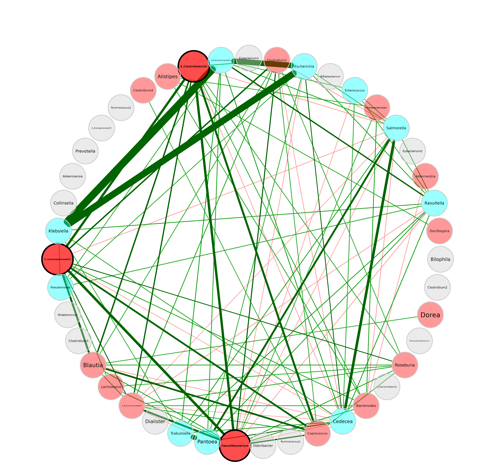
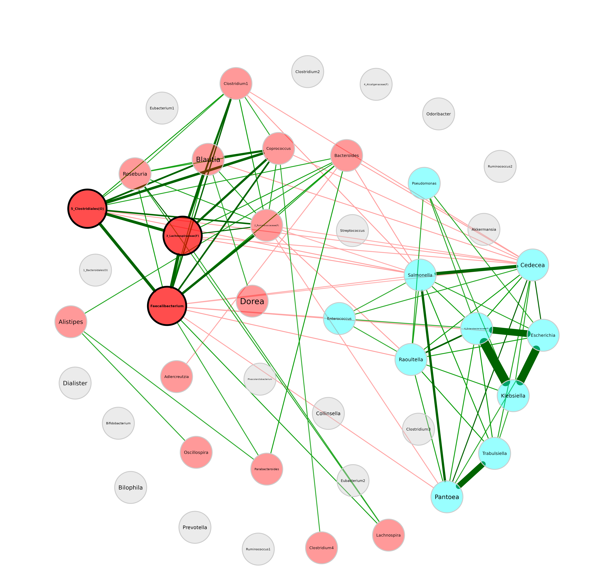

We construct a network at genus level to demonstrate a variety of modification options for the network plot. The SparCC package is used here because the resulting graph is denser than conditional independence graphs, which is preferable for this tutorial.
Network construction and analysis
data("amgut2.filt.phy")
# Agglomerate to genus level
amgut_genus <- tax_glom(amgut2.filt.phy, taxrank = "Rank6")
# Rename taxonomic table and make Rank6 (genus) unique
amgut_genus_renamed <- renameTaxa(amgut_genus,
pat = "<name>",
substPat = "<name>_<subst_name>(<subst_R>)",
numDupli = "Rank6")
#> Column 7 contains NAs only and is ignored.
# Network construction and analysis
net <- netConstruct(amgut_genus_renamed,
taxRank = "Rank6",
measure = "sparcc",
normMethod = "none",
zeroMethod = "none",
sparsMethod = "thresh",
thresh = 0.3,
dissFunc = "signed",
verbose = 2,
seed = 123456)
#> Checking input arguments ...
#> Done.
#> 2 rows with zero sum removed.
#> 43 taxa and 294 samples remaining.
#>
#> Calculate 'sparcc' associations ... Done.
#>
#> Sparsify associations via 'threshold' ... Done.
netprops <- netAnalyze(net,
clustMethod = "cluster_fast_greedy",
gcmHeat = FALSE # Do not plot the GCM heatmap
)Simple network plot
plot(netprops)In the following we will look at the different examples, where the
arguments of plot.microNetProps are adjusted.
Layout
Circular layout:
plot(netprops, layout = "circle")
Layouts from igraphpackage are also accepted (see
?igraph::layout_).
plot(netprops, layout = "layout_with_fr")We can also use a layout in matrix form. Here, we generate one in
advance using the Fruchterman-Reingold layout algorithm from
igraph package.
# Compute layout
graph <- igraph::graph_from_adjacency_matrix(net$adjaMat1,
weighted = TRUE)
set.seed(123456)
lay_fr <- igraph::layout_with_fr(graph)
# Row names of the layout matrix must match the node names
rownames(lay_fr) <- rownames(net$adjaMat1)
plot(netprops,
layout = lay_fr)We can see that the layout is basically the same as before, just rotated.
Repulsion
Nodes are placed closer together for smaller repulsion values and further apart for higher values.
plot(netprops, repulsion = 1.2)
plot(netprops, repulsion = 0.5)
For the rest of the tutorial we will use a repulsion of 0.9.
Shorten labels
plot(netprops,
repulsion = 0.9,
shortenLabels = "simple",
labelLength = 6)In many cases, it makes sense to use the ” intelligent ” label shortening, which preserves the last part of the label. This allows you to distinguish for instance between Enterococcus and Enterobacter. With the following label pattern, they would be abbreviated to “Enter’coc” and “Enter’bac”, while both would be abbreviated to “Entero” with the “simple” shortening used before.
Label size and scaling
By default, labels are scaled according to node size.
plot(netprops,
repulsion = 0.9,
labelScale = FALSE)
plot(netprops,
repulsion = 0.9,
labelScale = FALSE,
cexLabels = 1.5)If the labels overlap, one can play around with the
repulsion argument to randomly rearrange the node placement
until a good solution is found.
plot(netprops,
repulsion = 0.901,
labelScale = FALSE,
cexLabels = 1.5)Label font
Label fonts can be manipulated with the `labelFont’ argument. 2 stands for bold, 3 for italic, and so on. It is recommended to define the hub label font separately.
plot(netprops,
repulsion = 0.901,
labelScale = FALSE,
cexLabels = 1.5,
labelFont = 3,
hubLabelFont = 2)